Next: 2 Generación de tablas Up: 3 Algoritmo de locomoción Previous: 3 Algoritmo de locomoción


Next: 2 Generación
de tablas Up: 3
Algoritmo de locomoción Previous: 3
Algoritmo de locomoción
Dada una onda en el instante
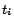
,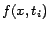
, el problema es calcular el vector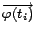
que hace que la articulación cumpla la ecuación de la onda. Si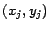
son las coordenadas de la articulación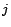
, el algoritmo debe encontrar el vector que satisfaga la ecuación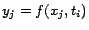
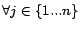
, esto es, que todas las articulaciones se encuentren sobre la onda.|
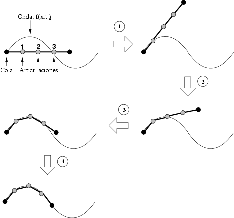 |
Figure
3: Pasos realizados para el cálculo
del vector de posición angular
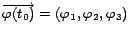
El algoritmo utiliza un enfoque geométrico, basado en la rotación de puntos 2D. Un ejemplo aplicado a un robot de tres articulaciones se muestra en la figura 3. Inicialmente,
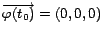
y la cola del robot está situada en el origen. El primer paso es la rotación del robot respecto de la cola hasta que la articulación 1 esté sobre la onda (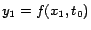
). Esto se realiza iterativamente, rotando un incremento angular (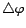
) y evaluando el error (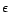
). Después, se rota la articulación 1 hasta que la articulación 2 satisfaga la ecuación de la onda. Transcurridas cuatro iteraciones, se puede decir que el ``robot se ajusta a la onda''. Todas las articulaciones satisfacen la ecuación de la onda, con un error . En general, si el robot tiene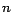
articulaciones, serán necesarias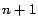
iteraciones. La parte central de este algoritmo es la rotación de puntos en 2D, por tanto, se emplean las funciones seno, coseno y arco tangente.


Next: 2 Generación
de tablas Up: 3
Algoritmo de locomoción Previous: 3
Algoritmo de locomoción